首頁 › 主題 › 宇宙星球
🪐 宇宙星球拼圖
水星、金星、地球、火星、木星、土星……這個主題帶孩子認識太陽系的八大行星，還有彗星、銀河、太空梭和望遠鏡，一起探索神秘的宇宙。
圖片為示意插圖，行星的大小與比例並非真實比例。
可以選擇 9、12 或 16 片，並切換拼圖形或方塊，由簡單到困難慢慢挑戰。免費、免註冊。
這個主題裡有什麼？（共 16 張）
點選任一張圖片，就可以直接開始拼。
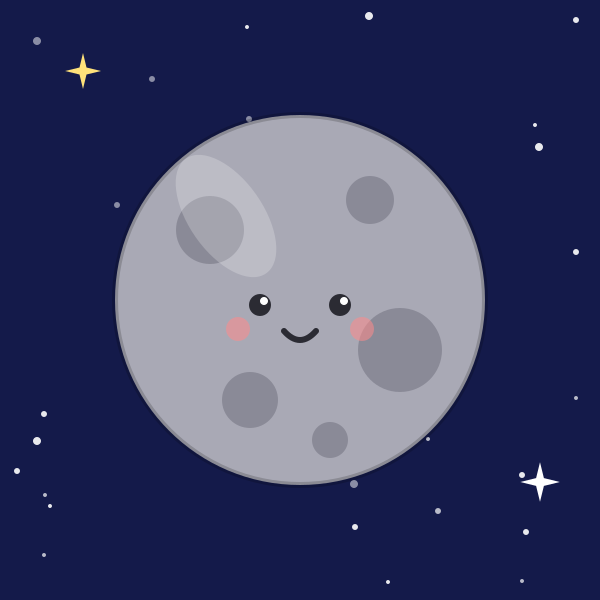
水星 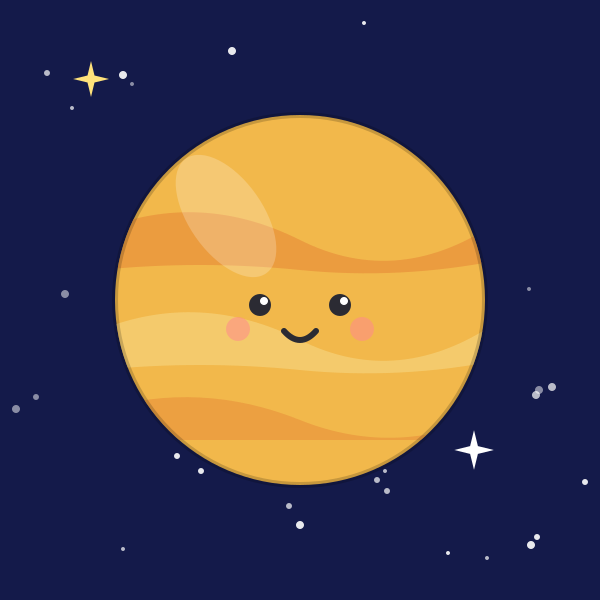
金星 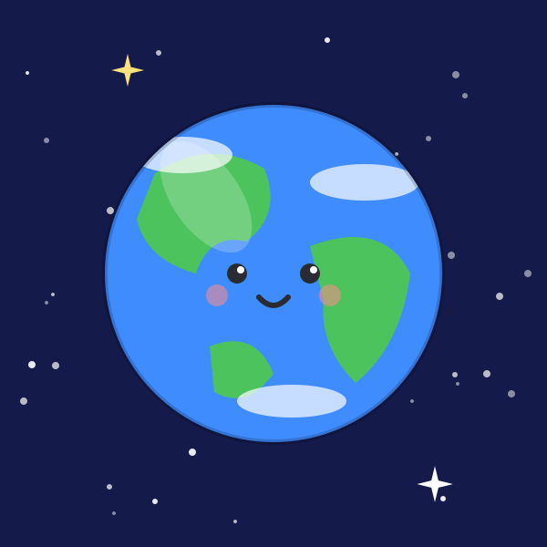
地球 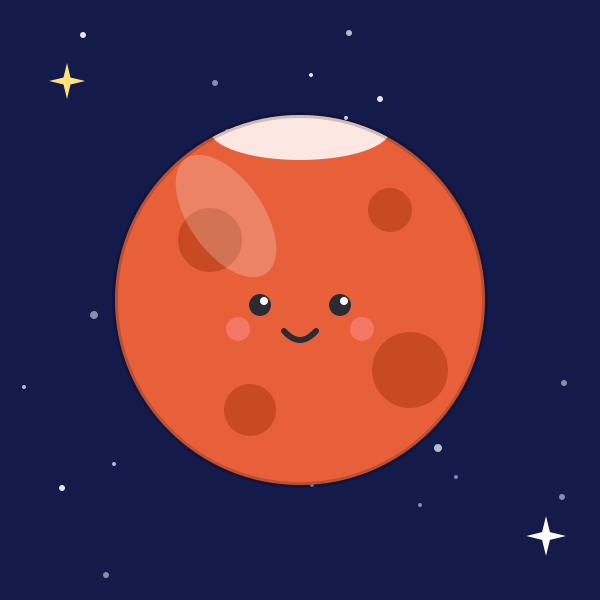
火星 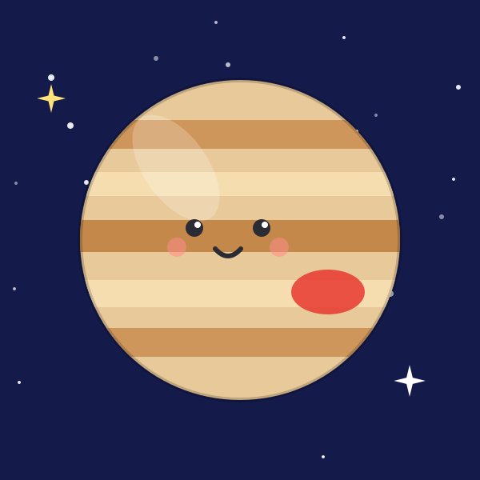
木星 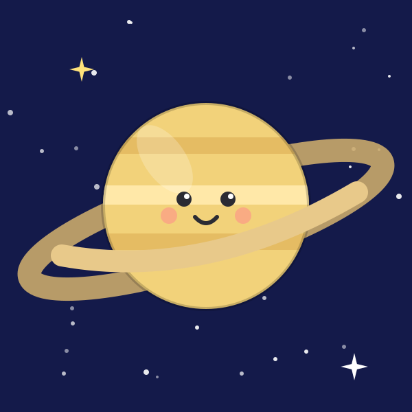
土星 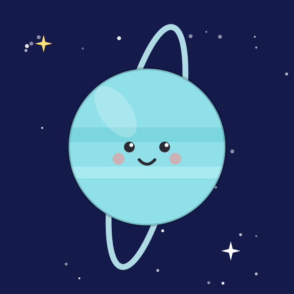
天王星 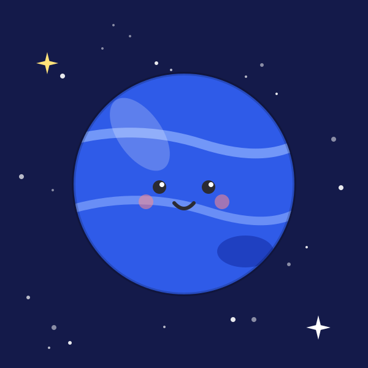
海王星 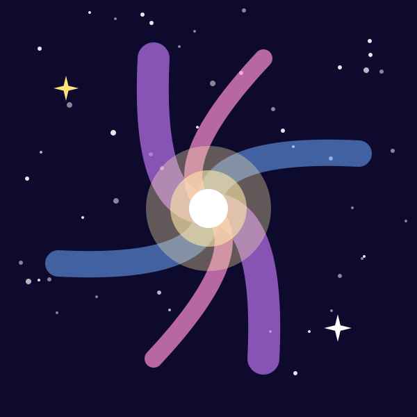
銀河 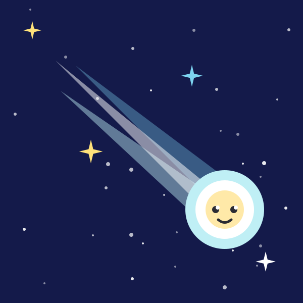
彗星 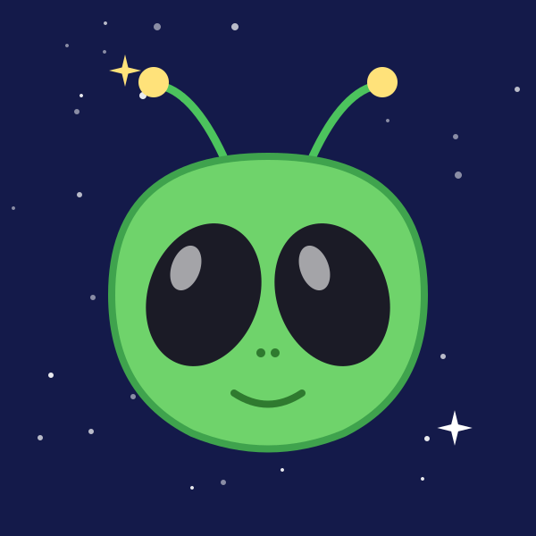
外星人 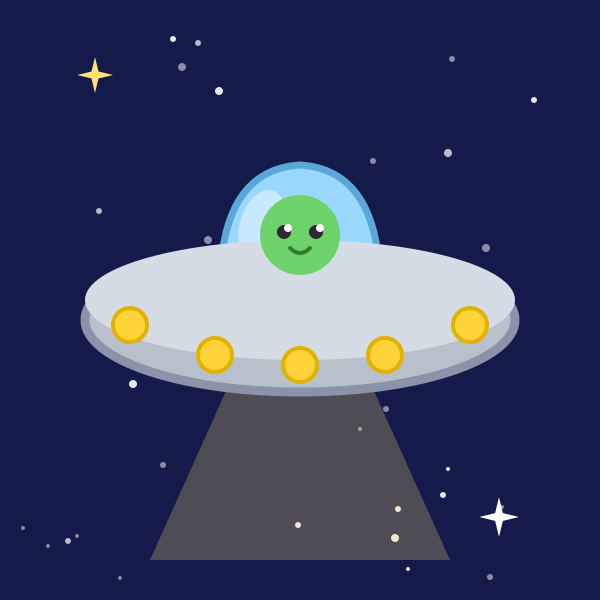
飛碟 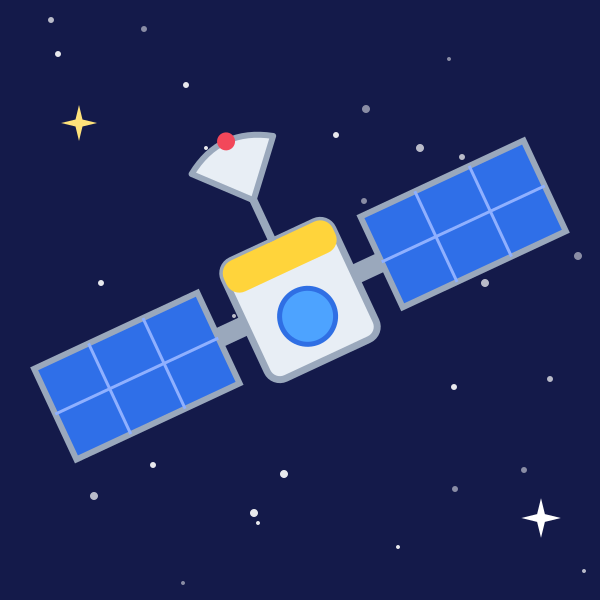
人造衛星 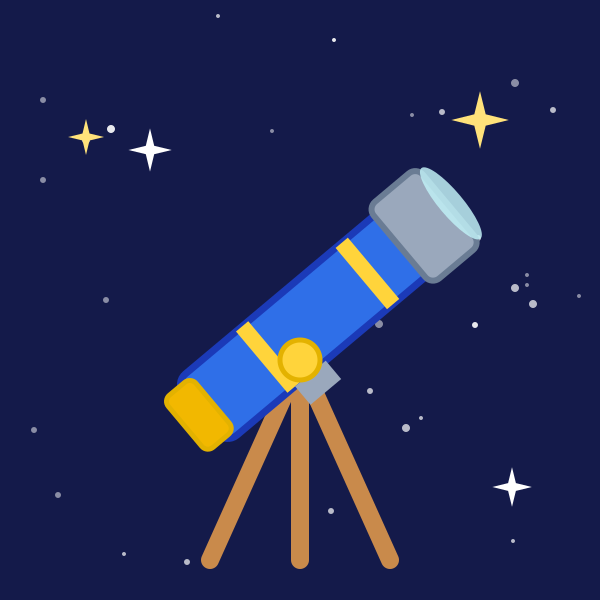
望遠鏡 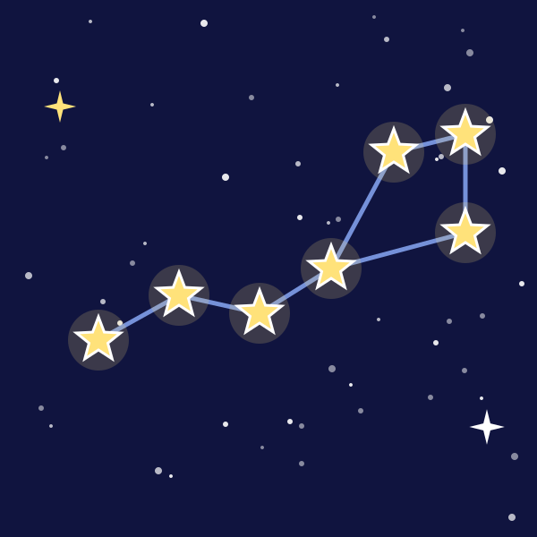
星座 太空梭
學習重點
- 認識八大行星的名字與外觀（例如：土星有光環、地球有海洋）
- 了解望遠鏡、人造衛星、太空梭的用途
- 激發對科學與宇宙的好奇心
和孩子一起聊聊
拼完之後，可以試著問孩子：
- 哪一顆行星有漂亮的環？
- 我們住在哪一顆星球？
- 你想搭太空梭去哪裡？